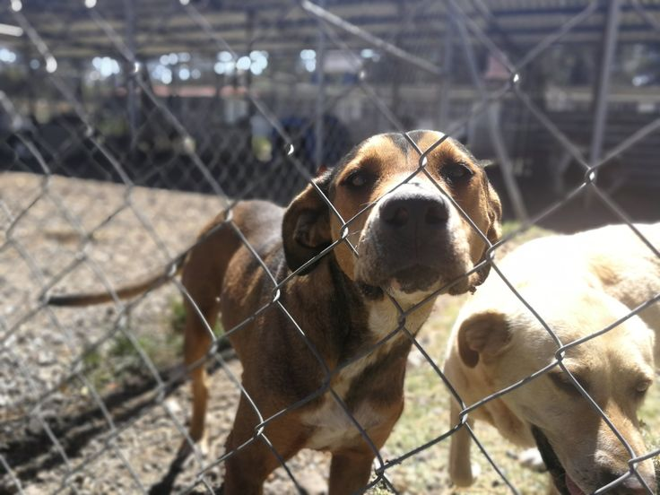
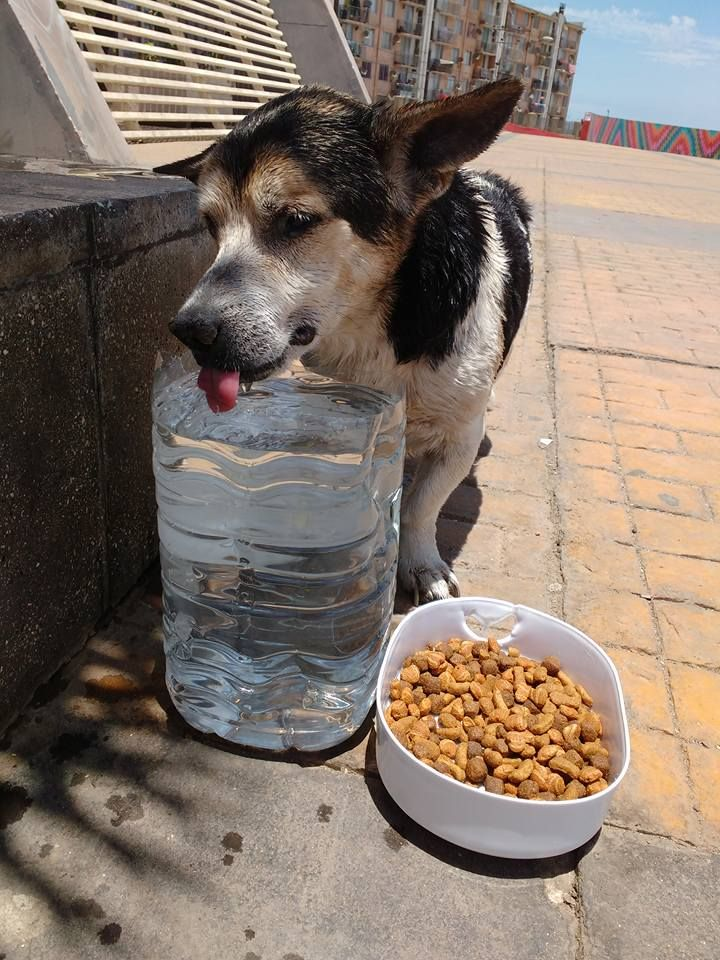
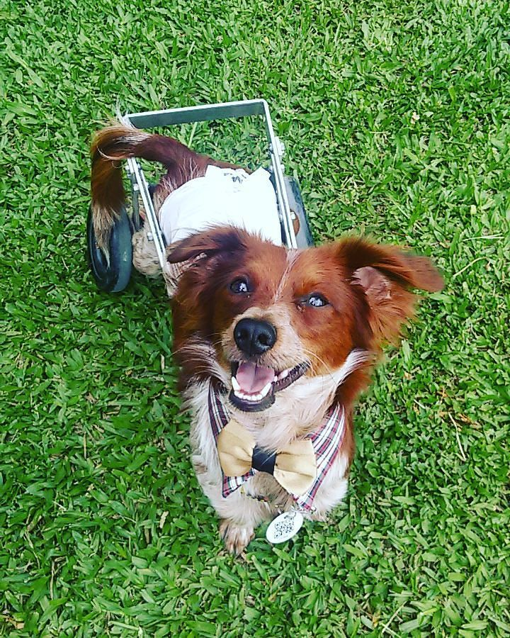

Callejeros
La mayoria de nuestros amiguitos son callejeros, muchos de ellos tuvieron pasados dificiles, golpeados, abandonados, heridos en las calles frias de nuestro Perú.

En Proceso
Al apoyarnos, nuestros amiguitos pueden obtener una mejor calidad de vida, pasar de dormir en las calles frias de nuestas ciudades a tener un plato de comida cada día estén de estén.

Segunda Oportunidad
Nuestra meta es que nuestros amigos consigan un hogar, el cual pueda brindale protección y una vida mejor.